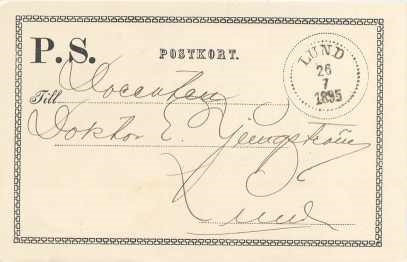
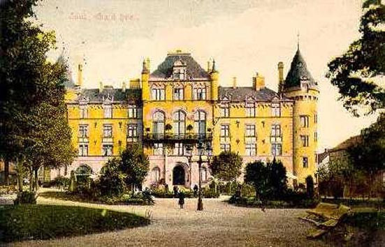

Lunds Filatelistförening, som bildades den 21 november 1889, blev den tredje filatelistföreningen i Sverige. Föreningen är öppen för alla samlare av frimärken, helsaker, posthistoria och vykort.
Initiativtagare till Lunds Filatelistförening var docent Ernst Ljungström och kamrer Jonas Johnsson, som den 13 november 1889 inbjöd ett tiotal filatelister till överläggningar på Akademiska Föreningen i Lund.
Närvarande på mötet var följande filatelister:
C. F. Gunnar Andersson (fil. kand.)
V. Reinhold Bend (jur. stud.)
Axel Björck (doktorand)
Jean H. Braconier (ing.)
N. A. Eduard Elmqvist (cand. stud.)
Fredrik Hjelmérus (fil. stud.)
Ernst Ljungström (docent)
Jonas Johnsson (kamrer)
Elof Runer (bokhandlare)
Axel J. G. Wahlstedt (fil. kand.)
Vid mötet beslöt man bilda Lunds Filatelistförening och en interimskommitté fick i uppdrag att utarbeta förslag till stadgar. Redan efter några sammanträden den 21 november, varefter föreningen konstituerades den 6 december 1889.


Lunds Filatelistförenings första styrelse kom att bestå av följande filatelister:
Ernst Ljungström (ordförande och bytesförman)
Jonas Johnsson (vice ordförande)
Fredrik Hjelmérus (sekreterare och kassör)
C. F. Gunnar Andersson (ledamot)
Elof Runer (ledamot)
Den 7 december 1999 firade Lunds Filatelistförening under gemytliga former sitt 110-årsjubileum. Dagen till ära hölls sammankomsten i Gröna Salongen på Grand Hotel i Lund. Deltagarna fick se en utställning om Lund och föreningens 110-åriga historia. Efter mötet intogs supé i Sten Bromans Salong.
